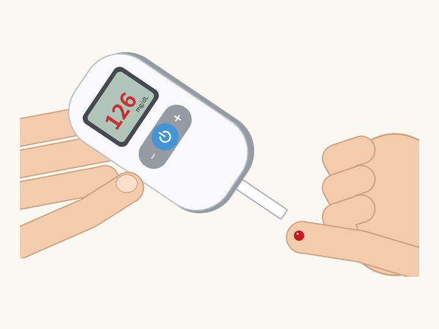
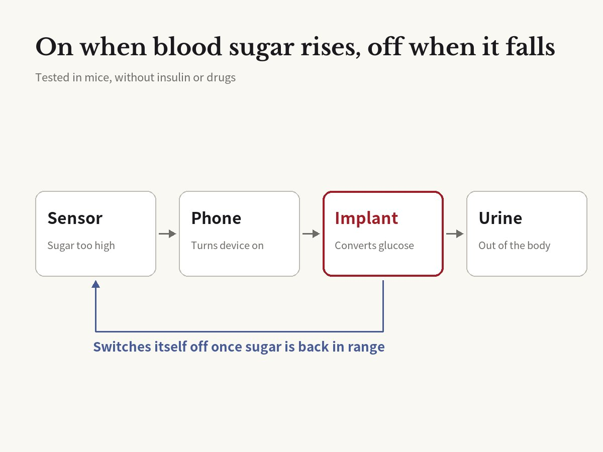

No insulin, no drugs: an implant used electricity to bring blood sugar back to normal in diabetic mice
Maity, Guha Ray, Buchmann, Charpin-El Hamri, Fussenegger · Science, 2026

01The result
People with diabetes check their blood sugar, take pills, and sometimes inject insulin every day. A team at ETH Zurich in Switzerland has tried something very different: a small device under the skin that uses electricity to lower blood sugar directly.
The team put the device into mice with obesity and type 2 diabetes. When it was switched on, their high blood sugar came back to the normal range within 60 to 90 minutes. No insulin and no drugs were used.
The study was published in the journal Science in October 2026.

02How it works
The implant is about 3 cm long. Inside is a catalyst: spongy graphite covered with tiny gold clusters and even smaller bits of platinum. There are no living cells, enzymes, or drugs in it.
When electricity flows, the catalyst turns glucose into a substance called gluconate. Most of it leaves the body through the kidneys in urine. In other words, extra sugar is sent out of the body before it can be stored as fat.
It switches on and off by itself. A glucose sensor worn on the arm keeps measuring blood sugar. When the level gets too high, it tells a smartphone or smartwatch over Bluetooth, and the phone turns the device on. When sugar drops to the target level, the device switches off, which guards against blood sugar falling too low.
Power is sent wirelessly from outside the body, with no battery. The team says the wireless power and control parts are already sold commercially.
03Insulin vs. this device
Insulin moves sugar out of the blood and into muscle, liver, and fat. Blood sugar goes down, but the sugar stays in the body.
This device gets rid of the extra sugar altogether. "This system kind of targets the root cause, which is the energy surplus by glucose in the body," said Martin Fussenegger, who led the study.
Body weight changed, too. Over six weeks, treated mice lost up to 10% of their body weight, and their blood fats called triglycerides went down. The team thinks the body started burning fat once less sugar was available.
04How safe was it?
The device runs on very low voltage. The team says it found no sign of tissue damage from electricity or heat.
The fully automatic system was tested in eight mice for two weeks. The catalyst still worked after up to three months under the skin. How long the whole device would last has not been tested yet.
05What it means
About 830 million people around the world have diabetes. The team plans to turn the implant into a medical device. If it proves safe and effective, it could become a new option for treating diabetes, and perhaps for weight loss in people without diabetes.
The next step is testing in pigs and sheep. Only after that can human trials be considered. This is not something doctors can use any time soon.
06Limitations
So far, it has only been tested in mice. No person has used it.
David Klonoff, a US diabetes doctor who was not part of the study, called it "a potentially promising method," but said its risks must be ruled out first. Gluconate building up in the body could upset its acid-base balance, and flushing it out could also drain minerals like sodium and potassium.
Size is another problem. People eat about 250 grams of carbohydrates a day, while mice eat about 2 grams. In the lab, a bigger device removed nearly all the glucose from 5 liters of liquid, about an adult's blood volume, but not a full day's intake. People may need a much larger device, or several.
Lowering blood sugar is not the same as curing diabetes. Insulin does many other jobs in the body, so this device cannot simply replace it.
Original paper
- Maity et al. (2026), Science 394(6822), doi:10.1126/science.ady8560
- doi.org/10.1126/science.ady8560